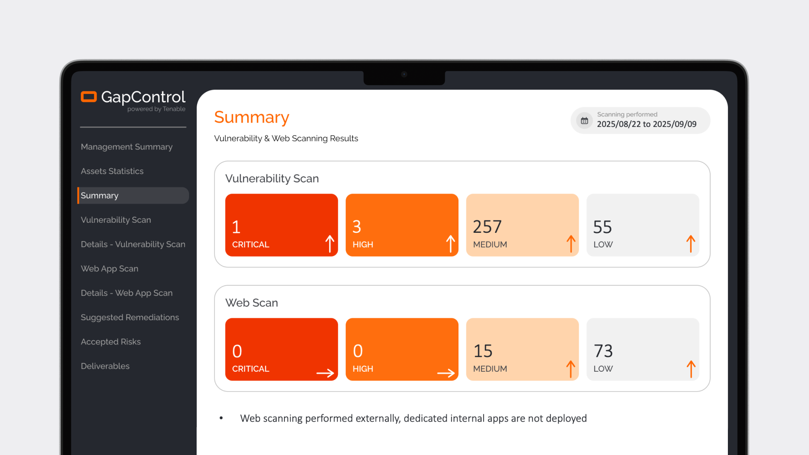
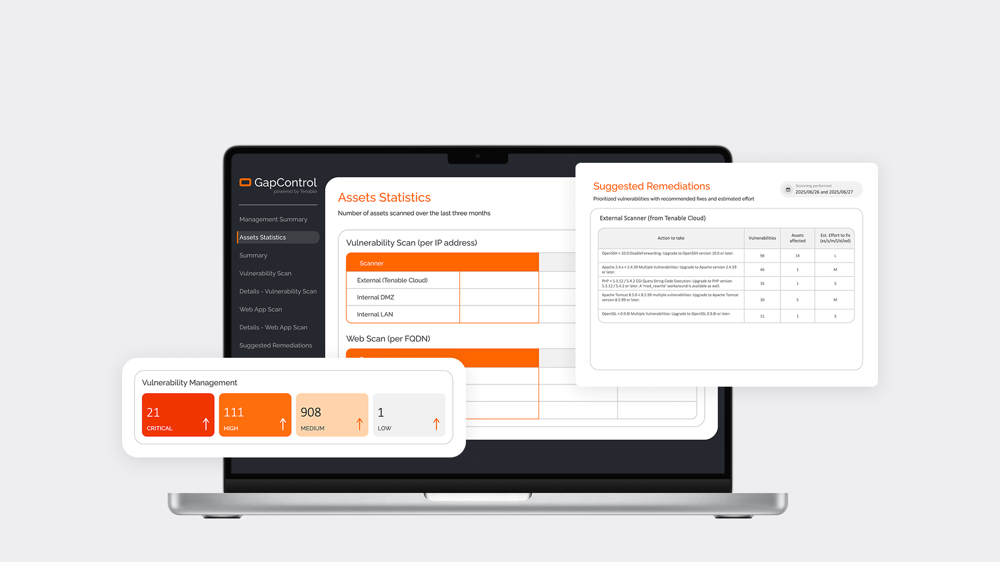

Instead of displaying all available data at once, I focused on defining a clear information hierarchy. The most critical insights are always presented first, allowing users to quickly grasp the overall risk level before exploring details.
Making complex security data easier to read
Role
UX/UI Designer
Company
ORBIT s. r. o.
Product
GapControl (Security Product)
Focus
Data Visualization, UX/UI Design

Mission
Making security data understandable
GapControl is a security product that helps organizations understand their current cybersecurity posture. The goal was to reduce cognitive load and enable users to understand their security state within seconds by designing a clear, structured interface.
Prioritizing information
Clear structure
Consistent layouts and visual patterns across all views help users quickly understand the structure of the data, while a persistent navigation list on the left shows where they are within the analysis. This makes complex security information easier to follow and navigate.

Result
From complexity to clarity
The final design translates complex security data into a clear and approachable overview. Users can quickly understand their current security posture, identify critical risks, and prioritize next steps without being overwhelmed by technical detail. Key insights are surfaced first, while deeper information remains easily accessible, supporting both fast decision-making and more detailed security analysis.